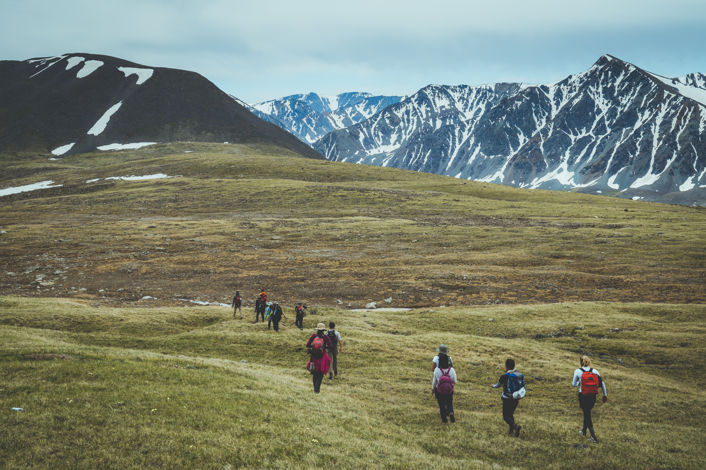

COUPONS
Our old loyalty system was based on deductions from order price. When user placed the order, As the company grew, it became inefficient.
We introduced coupons. Local operation teams received more functionality to reward users.
PAYMENTS
Interface for payments was embedded into pop up window. Content of the window relied on third service. This was confusing to the users.
Pop up windows are new browser windows. They are controlled by local settings and users may miss them without knowing.
Enhancements on backend sides to improve payments gave us opportunity to provide consistent experience to our users.
I designed experience and interactions to build more trust with users and handle payments using international and local payment methods.
HELP BUY
In some countries users can ask drivers to buy items at local stores on their behalf and deliver them to their home. Payment is usually settled when driver meets user.
Although, this was intended as a convinience service, it became intensively used by users during covid to supply households under lockdowns in South East Asian cities.
As temporary result of backend migration project, users lost ability to specify value of intended purchase. We observed significant spikes in cancellations of these types of orders.
I designed refinements to improve communication between user and driver. Missing information was brought back and we built foundation that help us customize experience of users when they place the order based on their needs.
DESIGN FOR REUSABILITY
Expedition website needs to present the most essential information about the expedition. We designed a modular architecture, where each page contains modules which can be turned on and off, based on which information is available.
Modules helped us build pages quickly. When a change was needed, we didn't need to redesign our pages. We just updated the module.
Later, all Foundlost pages were built with reusable modules. By connecting different modules we could launch any website we needed. For example, we could quickly launch an event page before we gave a talk to students at the school.

DESIGN FOR ZERO INFORMATION
We designed our pages in way we could launch new expeditions as soon as possible, even before all details were ready.
Our architecture supported to offer different actions ranging from waitlist to booking to capture interest of explorers. This helped us to validate ideas from early stages.
We made a way to launch expedition ideas when there were almost no details available. This helped us get immediate feedback from community and involve them in the planning process.


MAP
To immerse explorer with location is the most important piece of their experience. When we didn't provide location data, we saw them searching them elsewhere and we were loosing their attention.
We always tried to display as much information on the map as possible. Then we figured out we can tell more with showing less.
The map consists of slides which fade. As your scroll through, the point of interest on the map gets highlighted, matching the active background.
I think it's one of the best web native ways to present map that I've seen so far. Excited.
—Chris H, explorer and tech entrepreneur

RESPONSIVE FONTS
Pain point in web development was in responsivity of fonts. Typography guidelines defined atomic font styles, but they didn't guided us how to use them across different viewports. This resulted in communication that slowed down development.
We built guildelines that told us which atomic texts style to use across different devices. Once we built webiste typography with responsivity in mind, we didn't need to solve responsiveness of individual text elements.


FOOTSTEPS OF THE NOMADS
In 2018 Foundost organised an expedition to Western Mongolia for high school students from Hong Kong, Singapore and Kuala Lumpur.
Explorers spent 10 days with Kazakh Nomads. Then they moved to Potanin Glacier, which is the longest Mongolia's glacier. They condicted a scientific study to research its meltdown.
